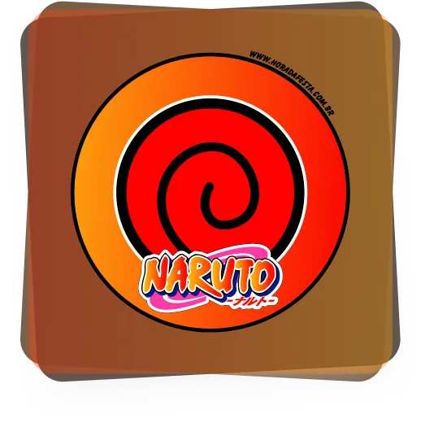

exame chunin
Descubra seu Caminho Ninja
Em um mundo de jutsus e aldeias ocultas, qual shinobi lendário habita em seu espírito? Responda ao chamado e revele sua linhagem

Vilas Ocultas
Explore a história da Folha, Areia, Névoa e outras grandes nações shinobis.
Biblioteca de Jutsus
De Ninjutsu e Genjutsu, identifique as técnicas que definem sua maestria em combate.
Personagem
Ao concluir o teste, você receberá o resultado de qual personagem você é.